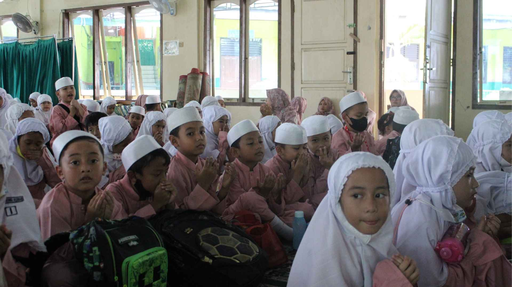
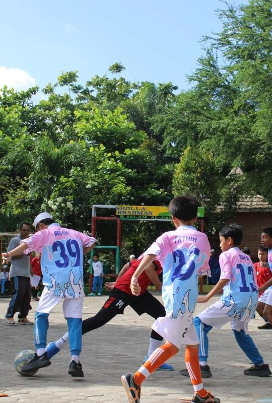

Beranda
Profil
Kegiatan & Praktik
Berita
Kontak
Kegiatan Sekolah
Kegiatan Rutin

Kegiatan Keagamaan dan Hari Besar

Kegiatan Ekstrakurikuler
Lihat Semua →
Praktik & Karya Guru
Modul & Bahan Ajar
Media Pembelajaran
Cerita Pembelajaran
Lihat Semua →
Beranda
Profil
Kegiatan
Berita
Kontak